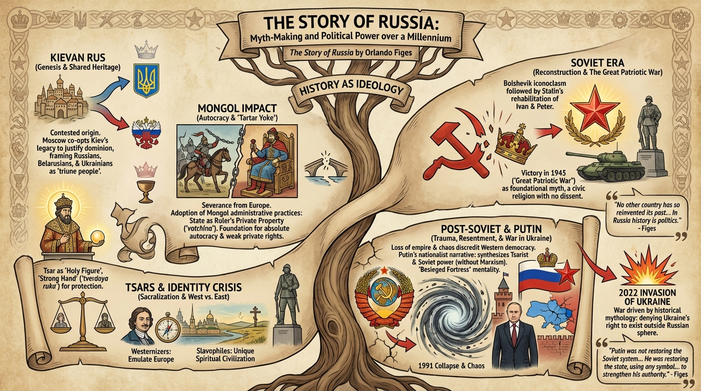

isbn-13: 9781526631763
Audible
AI Generated Content
Generated by gemini-3-pro-preview

The Story of Russia presents a concise overview of Russian history spanning over a millennium, from the formation of the Kievan Rus in the first millennium to the invasion of Ukraine in 2022. Rather than a strictly chronological retelling of events, Orlando Figes focuses on the “myth-making” of Russian history—how the past has been interpreted, reinvented, and manipulated by various rulers to legitimize current power structures and define national identity.
Key Points:
History as Ideology:
The central thesis of the book is that in Russia, history is not merely a record of the past but a political tool. From the Tsars to the Soviets to Vladimir Putin, rulers have consistently rewritten narratives to justify autocracy and territorial expansion. Figes argues that to understand modern Russia, one must understand the specific historical myths the nation tells about itself.
The Origins in Kievan Rus:
Figes explores the shared and contested heritage of the Kievan Rus (9th–13th centuries). Both Russia and Ukraine claim this period as their genesis. The book details how Moscow later co-opted the legacy of Kiev to justify its dominion over Ukrainian lands, framing Russians, Belarusians, and Ukrainians as one “triune people.”
The Mongol Impact on Autocracy:
The Mongol invasion (the “Tartar Yoke”) is identified as a pivotal moment that severed Russia from European development. Figes notes that the Muscovite princes adopted Mongol administrative practices, specifically the concept of the state as the private property of the ruler (votchina), which laid the groundwork for the Russian tradition of absolute autocracy and the weakness of private property rights.
The Sacralization of Power:
Under Ivan the Terrible and the Romanov dynasty, the Tsar was elevated to a semi-divine figure. The book highlights the persistent Russian longing for a “strong hand” (tverdaya ruka) and a “Holy Tsar” to protect the nation from internal chaos and external enemies.
Westernizers vs. Slavophiles:
A recurring theme is the identity crisis between looking West (Peter the Great’s reforms) and looking East (Eurasianism). Figes details the 19th-century intellectual split between those who believed Russia should emulate Europe and those who believed Russia possessed a unique, superior spiritual civilization distinct from the “corrupt” West.
The Soviet Reconstruction:
The Bolsheviks initially sought to destroy the memory of Imperial Russia but eventually rehabilitated figures like Ivan the Terrible and Peter the Great under Stalin to justify totalitarianism. The victory in 1945 (The Great Patriotic War) became the foundational myth of the late Soviet and current Russian state, functioning as a civic religion that tolerates no dissent.
Post-Soviet Trauma and Resentment:
The collapse of the Soviet Union in 1991 is described not as a liberation, but, for many Russians, as a catastrophic loss of status and empire. Figes documents how the chaos of the 1990s discredited Western-style democracy and paved the way for a return to authoritarianism.
Putin’s Use of History:
The final chapters analyze Vladimir Putin’s utilization of historical grievances. Figes explains how Putin synthesized Tsarist imperialism and Soviet power (while ignoring Marxist ideology) to create a nationalist narrative. This narrative relies on the idea that Russia is a “besieged fortress” constantly under threat from the West.
The War in Ukraine:
The book concludes with the context of the 2022 invasion of Ukraine. Figes asserts that the war was driven by historical mythology—specifically Putin’s belief that Ukraine is an artificial state with no right to exist outside of the Russian sphere of influence.
Selected Quotes:
“No other country has so reinvented its past to suit the needs of the present. In Russia history is politics.” (p. 1)
“The autocrat was not the state’s first servant (as in the Prussian tradition) but the owner of the land and all its people. This patrimonial concept of the state… would prevent the development of a legal order based on the rights of private property.” (p. 48)
“The Great Patriotic War became the founding myth of the Soviet regime… It was a cult of the war dead, a civic religion, with its own saints and rituals, which legitimized the Soviet system and its sacrifices.” (p. 215)
“Putin was not restoring the Soviet system… He was restoring the state, and in that mission he was willing to use any symbol from the past that would strengthen his authority and appeal to the patriotism of the Russian people.” (p. 285)
Further Reading:
- Lost Kingdom: The Quest for Empire and the Making of the Russian Nation by Serhii Plokhy
- Russia: A 1,000-Year Chronicle of the Wild East by Martin Sixsmith
- The Future Is History: How Totalitarianism Reclaimed Russia by Masha Gessen
- Nothing Is True and Everything Is Possible: The Surreal Heart of the New Russia by Peter Pomerantsev